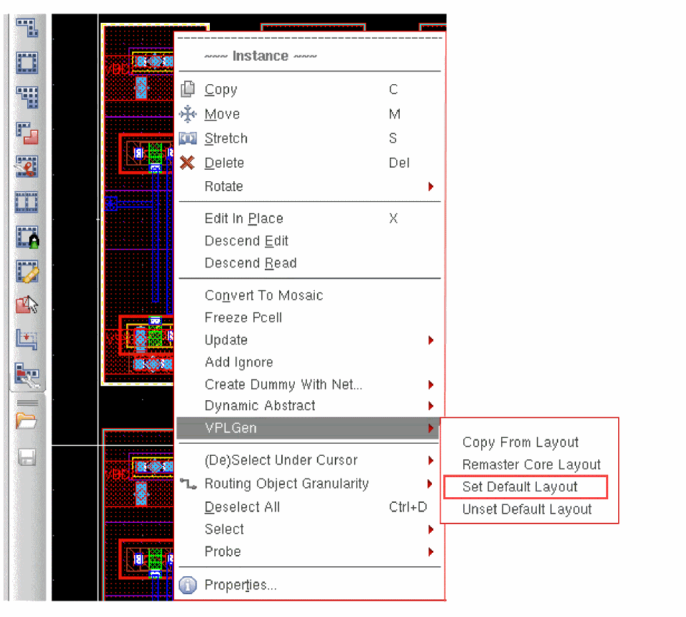
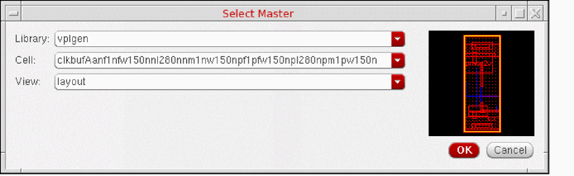

Setting the Default Layout
When you have finished editing the VPLGen core layout, you can set it to be the default layout for that schematic cell. Layout XL uses the default layout as a template the next time the cell is generated in the design, copies it into the layout, and updates the parameters values as required. This lets you re-use as much as possible from the core layout (placement, routing, guard-rings, and so on) the next time you generate that cell in the layout, making it easier to complete minor edits on new core layouts that differ only in their inherited parameter values.
- Select the VPLGen Pcell instance in the layout window.
-
Click the right mouse button and select VPLGen – Set Default Layout.
The Select Master dialog is displayed.
If there is a default layout already set, the form is populated with the name and thumbnail of that cellview. If there is no default layout set, the form contains the name and thumbnail of the currently selected layout view to make it easy to set this one as the default. -
Confirm the library, cell, and view names are as required and click OK.
The next time you generate this VPLGen, Layout XL copies the selected master into the design and automatically updates the parameter and property values to reflect those in the schematic. You can use this as a starting point from which to edit the layout to meet your requirements.
To set a different core layout as the default layout,
Unsetting the Default Layout
If you do not want to use the default layout for a particular VPLGen Pcell instance, you can unset it. To do this:
- Select the VPLGen in the Navigator assistant or layout window.
-
Click the right mouse button and select VPLGen – Unset Default Layout.
Subsequent VPLGen Pcell instances are generated from scratch by Layout XL.
Related Topics
Return to top